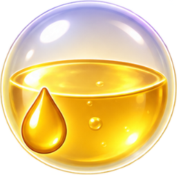
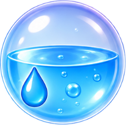
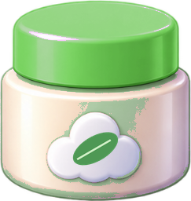

Выбери ингредиент
Нажми на передний шарик одной из трёх очередей. Он попадёт на общий конвейер.
Мобильная головоломка о потоке
Маленькая косметическая мастерская, где ты решаешь, что отправить в работу сейчас, а что оставить на потом. Ингредиенты едут по конвейеру, комнаты собирают рецепт, и заказ постепенно наполняется.
01 / Понятная цель
Первый уровень — заказ на четыре баночки крема. Собери рецепт четыре раза и доставь весь заказ. На следующих уровнях появятся новые продукты и способы их приготовления.
Победа — когда весь заказ доставлен.
02 / Три действия
Нажми на передний шарик одной из трёх очередей. Он попадёт на общий конвейер.
Комнаты сами забирают подходящие ингредиенты и начинают обработку, когда собрано всё необходимое.
Одна порция крема · Читай справа налево
Прокрути, чтобы увидеть весь рецепт ↔
Готовая баночка съезжает с конвейера в свою коробочку. Как только она внутри — ещё одна порция засчитана в заказ.
У каждого продукта своя коробочка: фиолетовая для крема, зелёная для маски.
03 / Главное решение
Смеситель ждёт растопленный воск, а перед тобой ещё одна порция масла. Выпустить её легко. Но пока она не нужна, ей придётся занять место на конвейере или в буфере.
Занятая комната пропускает шарик дальше. После полного круга он возвращается в буфер. Решай, когда открыть глубину очереди, когда подождать и когда вернуть ингредиент в работу.


Если нужная комната занята или ей пока не нужен этот ингредиент, шарик проезжает полный круг и попадает в буфер.
Шарик из буфера снова выходит на конвейер. Выбирай момент, когда комната готова его принять.
На конвейере — до 6 шариков, в буфере — 4 места. Всё, что выпущено лишним, будет занимать их.
Когда шарик завершает круг, а в буфере нет свободного места. Полный буфер сам по себе ещё не проигрыш — пока ты успеваешь возвращать шарики в поток.
Посмотри в демо, как это выглядит в игре
Урок 3Возврат из буфера СценарийКак выйти из затора СценарийПочему возникает переполнение04 / Как раскрывается игра
Сначала знакомый рецепт, затем планирование потока. Когда основа понятна — новый продукт и комната, которая превращает один шарик в два.
Крем ×1
Запусти три ингредиента и проследи путь от сырья до доставки.
Крем ×2
Подготовь следующий воск до первой доставки. Масло и воду подай по готовности смесителя.
Крем ×2
Открой воск за двумя порциями масла. Верни вторую порцию из буфера, когда она понадобится.
Крем ×4
Не выпускай всё сразу: дозируй ингредиенты и оставляй место для следующих возвратов.
Растительная маска ×1
Посмотри, как центрифуга разделяет основу, а две обработанные части снова становятся одним продуктом.
Пятый уровень намеренно спокойнее: сначала знакомство с центрифугой, затем — будущие задачи на несколько порций.
05 / Рецепты меняют маршрут

Первый рецепт
1Воск жидкий воск
2Три ингредиента тёплая смесь
3Тёплая смесь крем
Три ингредиента становятся одной баночкой. Пока готовится первая порция, можно подготавливать следующую.

Новый процесс
1Основа две части · 1 2
2Мякоть гель
3Сок экстракт
4Две части маска · 2 1
Обе части нужны. Разделить основу необходимо, чтобы обработать их по-разному и снова соединить.
Это игровые рецепты. Во всех уровнях готовый продукт зачисляется только после доставки к упаковке.
06 / Играй прямо здесь
Начни с воска и сделай первую баночку. После победы переходи к следующему уроку. Если нужен ориентир, кнопка «Посмотреть пример» покажет прохождение текущего уровня.
Уже знаком с кремом? Открой урок центрифуги в отдельной вкладке ↗
Загружаем мастерскую…
Не удалось встроить игру. Открыть её отдельно или .
Когда ты уходишь от игры, она становится на паузу. Вернувшись, нажми «Продолжить».
07 / Следующий шаг
Пять уровней уже можно пройти. Теперь важно увидеть, как человек понимает рецепты, принимает решения и разбирается с первым затором.
Рабочий прототип. Визуальный стиль и баланс продолжают развиваться.
Два продукта, четыре комнаты, буфер возврата и пять уроков. Подсказки и примеры помогают начать; пауза и повторный запуск позволяют попробовать другой порядок.
Понятно ли, чего ждёт комната? Когда игрок сам возвращает шарик из буфера? Может ли объяснить затор — и хочет ли попробовать ещё раз?
Несколько порций маски, запас места для двух выходов центрифуги, новые раскладки очередей. Следующие продукты вводим отдельными уроками.
Три ингредиента, четыре комнаты и одно решение за другим.